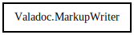

MarkupWriter
Object Hierarchy:

Description:
public class MarkupWriter
Writes markups and text to a file.
Content:
Constants:
Delegates:
Static methods:
- public static string escape (string txt)
Creation methods:
Methods:
- public MarkupWriter start_tag (string name, string[]? attributes = null)
Writes an start tag of a markup element to the file
- public MarkupWriter simple_tag (string name, string[]? attributes = null)
Writes a simple tag (<name />) to the file
- public MarkupWriter end_tag (string name)
Writes an end tag of a markup element to the file
- public MarkupWriter text (string text)
Writes the specified string to the output stream
- public MarkupWriter raw_text (string text)
Writes the specified string to the output stream
- public void set_wrap (bool wrap)
- private void break_line ()
- protected void do_write (string text)
- private void check_column (string name, bool end_tag = false)
- protected virtual bool inline_element (string name)
- protected virtual bool content_inline_element (string name)
Fields: